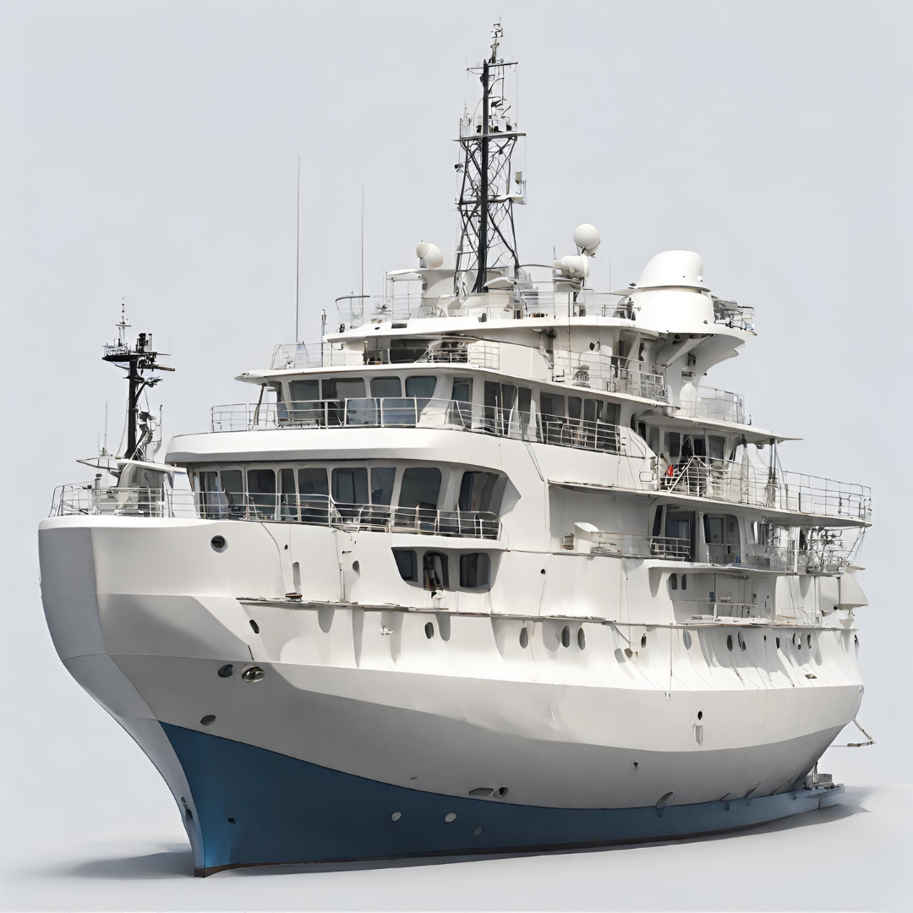
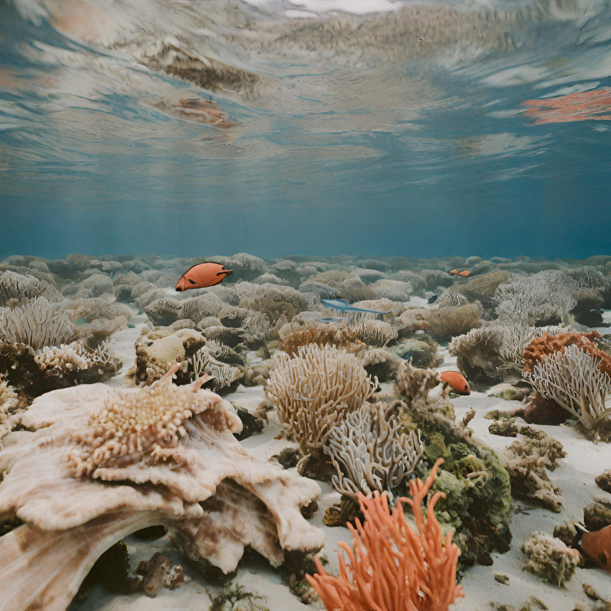
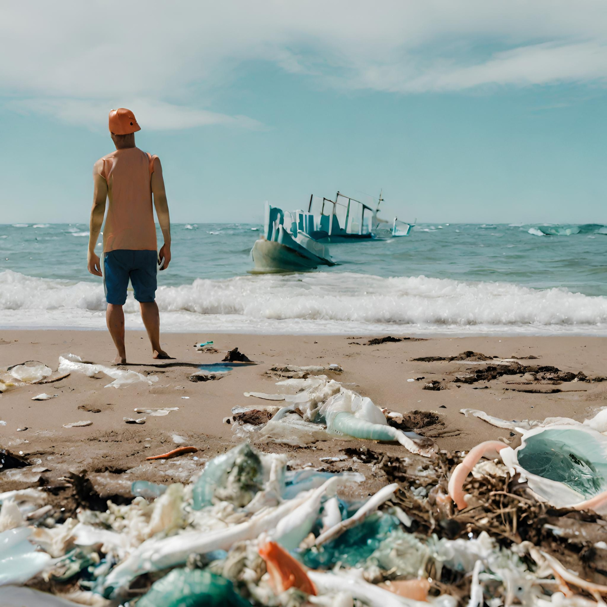

Los buques oceanográficos desempeñan un papel de inmensa importancia en la investigación oceanográfica
al brindar una plataforma móvil y altamente equipada para explorar y estudiar los vastos océanos de
nuestro planeta. Estas embarcaciones especializadas permiten a los científicos acceder a las áreas más
remotas y diversas de los océanos, lo que resulta crucial para recopilar datos esenciales sobre la
geología marina, la química del agua, la biología marina y el clima oceánico. Además, su capacidad para
llevar a cabo investigaciones a largo plazo y realizar experimentos continuos contribuye
significativamente a una comprensión más profunda de la Tierra, su ecosistema marino y su influencia en
el clima global, brindando conocimientos fundamentales para la ciencia y la toma de decisiones en todo
el mundo.


